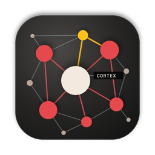

Louis Henrich · Zürich · Switzerland
Cortex: persistent memory for AI assistants
An open-source macOS project published on my GitHub. Cortex brings a user-owned Markdown knowledge base into AI workflows, with retrieval, a visual note graph and MCP connections.
Public source and macOS release 0.4.0, published 16 October 2026.
The product problem: useful context across conversations
Useful context should survive the end of a chat. Cortex starts with a folder of plain Markdown notes, including an existing Obsidian vault, and makes selected context available to connected AI assistants. The same notes remain readable and editable outside the app.
From notes to usable AI context
Memory the user owns
Knowledge stays in ordinary Markdown files. A graph shows explicit note links and connections derived from local embeddings.
Retrieval for the task
The recall engine combines keyword relevance and semantic similarity. Core notes provide persistent context; other notes can be retrieved when relevant.
Human review of new memories
An assistant can propose a memory through MCP. The proposal goes to an inbox for review before it becomes accepted memory.
Connecting the product to AI assistants
Cortex exposes memory through the Model Context Protocol (MCP), with tools for loading core context, recalling information, reading a note, proposing a memory and switching a persona. The repository documents connections for Claude Desktop, Claude Code, Cursor and Codex, plus an optional Bridge for web and mobile connections.
The native app uses SwiftUI, the memory engine and server are written in Swift, and a JavaScript graph runs inside the app. This connects interface design, retrieval behaviour and an actual assistant integration in one inspectable product.
Product decisions and boundaries
- Portable knowledge: use Markdown files instead of locking the underlying notes into an application database.
- Different kinds of context: separate core memory, relevant notes, personas and knowledge packs.
- Review before acceptance: keep proposed memories visible so the user decides what becomes durable context.
- Explicit sharing: the implementation filters notes marked private and pending proposals from AI recall. Sharing note context with a connected assistant still involves that assistant's service. The optional Bridge changes how memory is accessed.
The public release currently requires macOS 15 or later. Installation requirements, the unsigned build and the Bridge's current limitations are documented in the repository.
Public evidence you can inspect
I publish Cortex from my GitHub account. The public repository and release history document the implementation; version 0.4.0 was released on 16 October 2026. The commit history also records AI co-author contributions.
What this brings to AI implementation work
Cortex provides a concrete example of turning an AI interaction problem into a product with data storage, retrieval, assistant connections and a review workflow. These are practical decisions that also matter when integrating AI into an organisation's tools.
Read about my AI consulting in Zurich and Switzerland, explore The Social Hub and BloodLog, or see my other product work.
Let's talk about your AI project
I help businesses with AI strategy, implementation and product development. In person across Switzerland and remote worldwide, in native English and German.
Get in touch